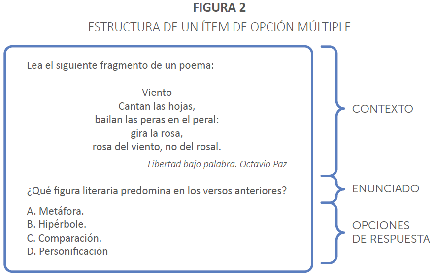

6 MIDE UC (2019)
Ítems de opción o selección múltiple
Constituyen el formato más ampliamente utilizado en evaluaciones a gran escala. Evalúan la capacidad del estudiante para seleccionar por escrito la respuesta correcta de entre varias opciones que se le suministran. Son fáciles de puntuar, pero difíciles de construir. Una de sus ventajas es que admiten la evaluación de una amplia gama de contenidos y habilidades (Gierl, Bulut, Guo y Zhang, 2017; Moreno et al., 2015).
Consideraciones generales para la elaboración de ítems de opción múltiple:
- Deben ser elaborados en concordancia con la tabla de especificaciones y abordar aspectos relevantes de cada disciplina. Por ello, tienen que construirse con el objetivo de evaluar un indicador presente en la tabla de especificaciones. Es relevante que el ítem sea coherente con el indicador declarado en la tabla, a fin de asegurar que mida lo que se propuso evaluar.
- Es importante elaborarlos cuidando su claridad y brevedad, por ello es fundamental usar adecuadamente la gramática y puntuación; evitar complejidades innecesarias en el uso del lenguaje y disminuir al mínimo necesario la extensión del texto en cada elemento del ítem.
- Es preciso cuidar que no presenten sesgo, evitando hacer alusión a situaciones contextuales que sean más familiares y que, por lo tanto, favorezcan a ciertos grupos de la población. Además, se debe cuidar que no reproduzcan estereotipos raciales, culturales o de género (por ejemplo, mujeres cocinando y hombres en la oficina).
Los ítems de selección múltiple presentan en su estructura el contexto, el enunciado y las opciones de respuesta, tal como se muestra en la figura 2.

Para una correcta elaboración de ítems de selección múltiple, es fundamental tener en cuenta una serie de criterios respecto de su contexto, enunciado y opciones de respuesta (Haladyna y Downing, 1989a, 1989b). Estos se presentan a continuación:
6.1 Contexto
Corresponde a la descripción de una situación que sirve como base para que el evaluado tenga un punto de referencia concreto al momento de enfrentarse al enunciado. Puede ser una imagen, un texto, una situación, un gráfico, etcétera.
Recomendaciones acerca del contexto:
- Incluir contextos necesarios y verosímiles que permitan el uso o aplicación del conocimiento. Cuidar que la dificultad del ítem no se vea artificialmente aumentada por la inclusión del contexto.
- En relación con el uso de imágenes, utilizar cuando sean fundamentales para responder el ítem o para motivar a los evaluados a responder.
- Evitar que la imagen distraiga o entregue pistas que ayuden a responder.
6.2 Enunciado
Corresponde a la pregunta o tarea concreta que se le solicita al evaluado.
Recomendaciones acerca del enunciado:
- Expresar claramente la tarea que se demanda al evaluado. Es recomendable que esté formulado como una pregunta y no como una frase inconclusa.
- Debe estar planteado en positivo. Si es inevitable ocupar palabras como “no” o “excepto”, se sugiere subrayarlas o destacarlas.
Si el contenido a evaluar requiere de una graduación en las respuestas, en el enunciado se puede preguntar por “la mejor respuesta”. En estos casos se debe especificar claramente el criterio de graduación, es decir, con qué lógica una de las opciones es la correcta y las otras no.
Algunos ejemplos de preguntas de este tipo son:
• ¿Cuál de las siguientes accionespermite enfrentar de manera más directa el problema de…?
• ¿Cuál de las siguientes herramientas permite fabricar la pieza X con mayor precisión?
Existen también los denominados ítems de doble proceso, que en su estructura presentan un enunciado con una serie de afirmaciones, y las opciones de respuesta están constituidas por su combinación. Se suelen utilizar cuando es difícil encontrar cuatro opciones plausibles, no obstante, se recomienda evitar este tipo de preguntas, ya que son muy difíciles de construir, pues se debe cuidar que no se respondan por el uso de reglas lógicas de combinación de las afirmaciones y, así, evitar la “varianza irrelevante para el constructo”.
| Ejemplo de ítem de doble proceso |
|---|
Respecto al principio escalar de Fayol se puede decir que:
I. Representa la distribución de la autoridad en una organización.
II. Representa las líneas formales de comunicación en una organización.
III. Describe tres niveles de toma de decisiones.
IV. Representa al conjunto de personas que integran una organización clasificadas por grado o rango de autoridad.
V. Representa al conjunto de personas que integran unas organizaciones clasificadas según el cargo que desempeñan.
- I – III – IV
- II –III – IV
- I – III – V
- II – III – V
6.3 Opciones de respuesta
Corresponden al número de respuestas plausibles que puedan derivarse del enunciado, entre las cuales existe una y solo una que es correcta. Todas las opciones deben parecer posibles respuestas a la pregunta planteada. En general, es recomendable el uso de cuatro opciones (la correcta y tres incorrectas).
Recomendaciones acerca de las opciones de respuesta:
- Deben mantener la misma o similar estructura gramatical y ser concordantes con el enunciado.
- Deben ser lo más directas posibles e independientes unas de otras.
- Evitar las opciones muy diversas y con diferente nivel lógico.
- Evitar el uso de opciones del tipo “Ninguna de las anteriores” o “Todas las anteriores”.
- Deben tener una extensión similar.
- Ordenarlas lógica o numéricamente.
La respuesta correcta debe ser completa y claramente correcta y, además, la mejor opción, es decir, debe ser claramente identificable cuando el evaluado conoce bien el concepto por el cual se pregunta.
Recomendaciones acerca de la respuesta correcta (también llamada clave):
- Debe responder a la pregunta planteada tanto en el contenido (lógica conceptual) como en lo formal (lógica gramatical). *Si no atenta contra la lógica en que fueron ordenadas las respuestas, se debe variar su localización en distintas preguntas.
- Evitar el uso de determinantes específicos (siempre, nunca, completamente, absolutamente) y cuidar que no presente alguna marca textual con el enunciado de la pregunta. Por ejemplo, si se interroga por una actividad que trabaje “conciencia fonológica” y la respuesta correcta es la única que contiene el concepto “fonológico”, el evaluado puede seleccionar esa opción sin saber del contenido.
Las opciones incorrectas o distractores están diseñados para atraer a los evaluados con menor dominio o conocimiento sobre lo que se pregunta, por lo que se espera que sean “atractores”, presentando errores conceptuales o razonamientos equivocados. Es decir, no son cualquier opción incorrecta, sino que deben estar diseñados para informar acerca de errores típicos.
Recomendaciones acerca de las opciones incorrectas (distractores):
- Deben ser incorrectas, pero plausibles. Evitar el uso de distractores absurdos o irrisorios.
- No deben atraer a través de “trampas” (sutilezas en la forma de preguntar, uso de habilidades diferentes a la que se busca evaluar en el ítem).
En el anexo 1 se entrega una síntesis de los principales criterios de elaboración de ítems de opción múltiple que han sido revisados en esta sección.
6.4 Ejemplos de buenos ítems
| Ejemplo A de ítem de opción múltiple |
|---|
Observe la siguiente imagen:
¿Qué civilización precolombina desarrolló el tipo de cultivo que se muestra en la imagen?
- Inca.
- Maya.
- Olmeca.
- Azteca.
En este ítem se observa un contexto necesario para responder, ya que se requiere observar el tipo de cultivo que se está desarrollando para así identificar que la respuesta correcta es la civilización azteca. Además, el enunciado es claro y preciso, ya que contiene el criterio por el cual el evaluado podrá distinguir la respuesta correcta.
| Ejemplo B de ítem de opción múltiple |
|---|
Lea el siguiente texto:
En el intestino grueso del organismo humano viven ciertas bacterias capaces de transformar restos de alimentos en vitaminas, las que podemos aprovechar para nuestro proceso de nutrición.
¿Qué tipo de relación se establece entre esas bacterias y los seres humanos?
- Parasitismo.
- Mutualismo.
- Amensalismo.
- Comensalismo.
En este ítem se observa que las opciones responden a lo solicitado en el enunciado, ya que todas corresponden a tipos de relaciones entre organismos y son plausibles. Es decir, no corresponden a opciones irrisorias o sin sentido, sino a errores frecuentes en el aprendizaje de este contenido.
6.5 Anexo 1. Criterios para la elaboración de ítems de opción múltiple
| Sobre el contenido del ítem | • ¿Tiene concordancia con el indicador de evaluación? • ¿Aborda un aspecto central de la disciplina? • ¿Es claro y conciso? ¿No presenta complejidades innecesarias del lenguaje? |
| Sobre el contexto y el enunciado | • ¿El contexto es necesario para medir el indicador y responder la pregunta? • ¿El enunciado expresa con claridad la tarea que se solicita al evaluado? • ¿El enunciado constituye una pregunta directa y está planteado en positivo? |
| Sobre las opciones de respuesta | • ¿Todas las opciones responden a la pregunta contenida en el enunciado? • ¿La opción correcta es indiscutiblemente la única correcta? • ¿Los distractores son respuestas incorrectas, pero plausibles? |